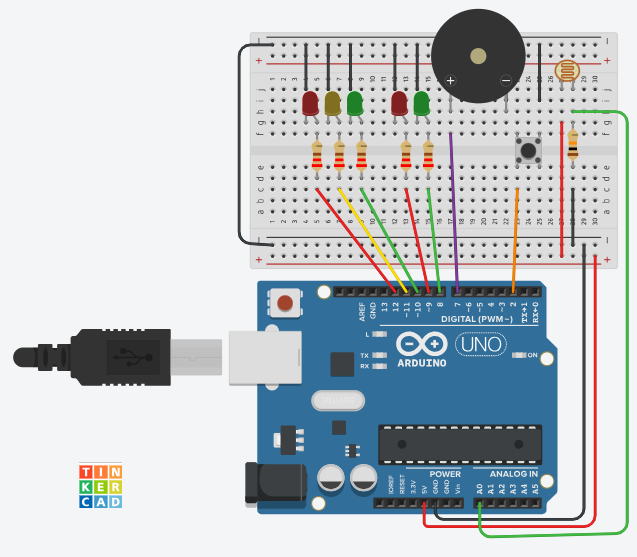

¡Llegó el momento de la verdad, ingenieros del CECyTEM! A lo largo de este parcial hemos aprendido a controlar salidas de luz, interpretar botones sin ruido eléctrico, generar alertas acústicas inclusivas con el buzzer, optimizar código con bucles for y leer el entorno en tiempo real gracias a la fotorresistencia (LDR) y el Monitor Serial.
En el mundo profesional, un ingeniero no trabaja con piezas sueltas; su verdadero valor radica en la capacidad de integrar diferentes tecnologías para resolver un problema de la sociedad. Hoy, tu misión será fusionar todo lo aprendido para programar un Sistema de Control Vial Inteligente y Autónomo capaz de tomar decisiones por sí mismo según la hora del día.
📋 Las Reglas del Desafío (Requerimientos del Sistema)
Tu prototipo final debe utilizar la maqueta completa que mantuviste armada (5 LEDs, 1 Buzzer, 1 Botón y 1 LDR) y reaccionar exactamente bajo las siguientes condiciones automáticas:
☀️ FASE 1: Operación Diurna (Cuando la LDR detecta Luz)
El sistema debe comportarse como el Semáforo Inclusivo de una gran avenida:
- El semáforo de autos debe permanecer en Verde fijo y el peatonal en Rojo fijo.
- El sistema debe estar vigilando el botón constantemente. Si un peatón presiona el botón, se activa la función personalizada de cruce: los autos frenan (Verde ➡️ Amarillo ➡️ Rojo) y el semáforo peatonal cambia a Verde acompañado de los pitidos intermitentes del buzzer (optimizados con tu bucle
for). - Al terminar el tiempo de cruce y los parpadeos estroboscópicos de prisa, el sistema regresa de forma segura a la normalidad diurna.
🌙 FASE 2: Operación Nocturna (Cuando la LDR detecta Oscuridad)
En cuanto cubras la LDR con tu mano o apagues las luces del laboratorio (simulando la noche), el Arduino debe suspender inmediatamente el ciclo del botón y activar el protocolo de ahorro y precaución:
- El semáforo peatonal se apaga o se queda en Rojo fijo por seguridad.
- El LED Amarillo de los autos debe parpadear lentamente de forma infinita (0.5 segundos encendido, 0.5 segundos apagado) para avisar a los conductores nocturnos que deben avanzar con precaución.
- En esta fase, el botón peatonal queda completamente desactivado o ignora las solicitudes de cruce.
- En cuanto la LDR vuelva a detectar luz (amanece), el semáforo debe regresar de forma automática e instantánea a la Fase Diurna.
🛠️ Componentes Necesarios:
- Tu circuito del semáforo ya armado.
- 1 Fotorresistencia (LDR).
- 1 Resistencia de 10k Oms (Marrón, Negro, Naranja) para hacer un divisor de voltaje.
- 2 Cables jumper adicionales.
📝 Instrucciones de Conexión:
- Coloca la LDR en un extremo libre de tu protoboard.
- Conecta una de sus patitas directamente a la línea de 5V del Arduino.
- La otra patita de la LDR se conectará a dos lugares al mismo tiempo (un nodo):
- Conecta una resistencia de 10k Oms que vaya directo a la línea de GND.
- Conecta un cable jumper desde esa misma unión hacia el Pin Analógico A0 del Arduino.
⚡ Diagrama de armado

🧠 El Código: El Semáforo que Detecta la Oscuridad
Observa con atención cómo el void loop() ahora toma una decisión inteligente basada en la luz antes de permitir el funcionamiento del botón.
/*
* Proyecto Integrador 1: Sistema de Control Vial Inteligente
* Alumno(s): [Tu Nombre Aquí]
* Grupo: [Tu Grupo]
* Especialidad: Instrumentación Industrial
* CECyTEM 05 Guacamayas
*/
// Pines del Semáforo
int cocheVerde = 10;
int cocheAmarillo = 11;
int cocheRojo = 12;
int peatonVerde = 8;
int peatonRojo = 9;
int pinBuzzer = 7;
int botonPeaton = 2;
// Pin del Sensor de Luz
int pinLDR = A0;
// Variable para guardar la cantidad de luz
int lecturaLuz = 0;
int umbralNoche = 400; // Si el valor baja de 400, asumimos que es de noche, ajusta este valor usando el Monitor Serial
void setup() {
pinMode(cocheVerde, OUTPUT);
pinMode(cocheAmarillo, OUTPUT);
pinMode(cocheRojo, OUTPUT);
pinMode(peatonVerde, OUTPUT);
pinMode(peatonRojo, OUTPUT);
pinMode(pinBuzzer, OUTPUT);
pinMode(botonPeaton, INPUT_PULLUP);
// Nota: Los pines analógicos (A0) se configuran automáticamente como entradas,
// por lo que no es estrictamente obligatorio poner pinMode(A0, INPUT);
Serial.begin(9600); // Se inicializa el monitor serial.
}
void loop() {
// Leemos constantemente cuánta luz hay en el laboratorio
lecturaLuz = analogRead(pinLDR);
// Imprimimos el valor en el monitor serial
// Imprime el texto descriptivo
Serial.print("La lectura de luz actual es: ");
// Imprime el número y da un salto de línea (ln = line) para el siguiente dato
Serial.println(lecturaLuz);
// Esperamos media décima de segundo para que los números no corran tan rápido
delay(50);
// --- TOMA DE DECISIONES INTELIGENTE ---
if (lecturaLuz < umbralNoche) {
// ¡Es de noche! Activamos el modo preventivo nocturno
activarModoNocturno();
}
else {
// Es de día: El semáforo opera normalmente y vigila el botón
digitalWrite(peatonRojo, HIGH);
digitalWrite(cocheVerde, HIGH);
digitalWrite(cocheAmarillo, LOW);
digitalWrite(cocheRojo, LOW);
digitalWrite(peatonVerde, LOW);
if (digitalRead(botonPeaton) == LOW) {
activarPasoPeatonal(); // Llama a la función del Tomo 4
}
}
}
// Función personalizada para el ahorro de energía y precaución nocturna
void activarModoNocturno() {
// En la noche, los peatones esperan y el semáforo de autos parpadea en amarillo
digitalWrite(peatonVerde, LOW);
digitalWrite(cocheVerde, LOW);
digitalWrite(cocheRojo, LOW);
digitalWrite(peatonRojo, HIGH); // Peatón en rojo fijo por seguridad
// Parpadeo preventivo usando nuestro bucle 'for'
for (int i = 1; i <= 3; i++) {
digitalWrite(cocheAmarillo, HIGH);
delay(500);
digitalWrite(cocheAmarillo, LOW);
delay(500);
}
}
// (Aquí abajo se mantiene la función void activarPasoPeatonal() del Tomo 4)
void activarPasoPeatonal() {
delay(500);
digitalWrite(cocheVerde, LOW);
digitalWrite(cocheAmarillo, HIGH);
delay(2000);
digitalWrite(cocheAmarillo, LOW);
digitalWrite(cocheRojo, HIGH);
delay(1000);
digitalWrite(peatonRojo, LOW);
digitalWrite(peatonVerde, HIGH);
for (int cruce = 1; cruce <= 3; cruce++) {
tone(pinBuzzer, 800, 300);
delay(600);
}
for (int i = 1; i <= 6; i++) {
digitalWrite(peatonVerde, LOW);
tone(pinBuzzer, 1400, 100);
delay(200);
digitalWrite(peatonVerde, HIGH);
delay(200);
}
digitalWrite(peatonVerde, LOW);
digitalWrite(peatonRojo, HIGH);
delay(1000);
digitalWrite(cocheRojo, LOW);
}
🏆 ¡Misión Final Cumplida! (Cierre del Primer Parcial)
¡Felicidades, ingenieros! Han diseñado, cableado y programado con éxito un Sistema de Control Vial Inteligente y Autónomo completamente funcional. A través de este gran desafío, han demostrado el dominio absoluto de las bases de la automatización moderna:
- El Control del Hardware: Coordinar múltiples salidas digitales (LEDs y Buzzer) mediante sincronizaciones precisas de tiempo.
- Interactividad Inclusiva: Escuchar el entorno digital (el botón de solicitud peatonal) aplicando optimizaciones de código como las funciones personalizadas (
void) y la limpieza de código con buclesfor. - Autonomía Analógica: Interpretar variables continuas del mundo físico (LDR) usando el convertidor analógico-digital (
analogRead()) del microcontrolador. - Telemetría y Diagnóstico: Comunicar el cerebro del Arduino con una computadora a través del Monitor Serial para depurar, analizar y comprender los umbrales lógicos de tus algoritmos en tiempo real.
Este prototipo ya no es un simple ejercicio escolar; es el reflejo exacto de cómo funcionan los sistemas de control de tráfico en las ciudades más desarrolladas del mundo. Han dado sus primeros pasos firmes en la Instrumentación Industrial y los sistemas embebidos.
¡Tienen todo el derecho de sentirse sumamente orgullosos del proyecto tecnológico que hoy brilla y hace ruido en sus mesas de trabajo!
¡Nos vemos en el Segundo Parcial para llevar sus circuitos al siguiente nivel! — Profe Campos